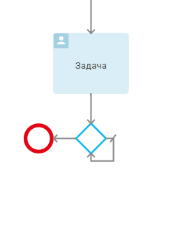
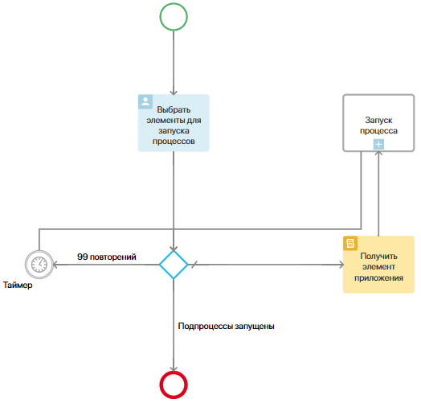

В данной статье описаны ошибки, возникающие при исполнении бизнес-процессов. Про ошибки, возникающие при моделировании, вы можете прочитать в статьях Публикация бизнес-процесса и Проверка корректности бизнес-процесса.
Ошибка, возникшая на определенном шаге процесса, отражается на карточке экземпляра. Там же вы можете предпринять необходимое действие — пропустить данный шаг или повторить его выполнение. При необходимости процесс можно также прервать.
Критические и некритические ошибки
В зависимости от того, на каком шаге исполнения процесса в ELMA365 появилась ошибка, ее можно отнести к критическим или некритическим. При критической ошибке процесс прерывается, а пользователи из группы Администраторы получат сообщение с темой «Процесс прерван из-за критической ошибки». При некритической ошибке процесс продолжается, но администраторы также получат оповещение с темой «Во время исполнения процесса произошла ошибка».
К критическим ошибкам относятся:
- Ошибка при создании элемента приложения — например, было удалено приложение, в котором требуется создать элемент. Для того чтобы эта ошибка не повторялась, убедитесь, что в шаге Создание элемента верно указан элемент приложения.
- Ошибка при запуске синхронного подпроцесса — при запуске синхронного подпроцесса выполнение основного бизнес-процесса приостанавливается. Если в таком подпроцессе возникнет ошибка, то основной процесс будет прерван, и вы увидите сообщение «Не удалось запустить подпроцесс».
- Ошибка в событии-таймере — вы увидите сообщение «Не удалось взвести таймер», например, если не заполнена переменная, указывающая время срабатывания таймера, или системе не удалось высчитать время в рамках рабочего календаря.
К некритическим ошибкам относятся:
- Ошибка при установке статуса — например, данный статус был удален из приложения. Для того чтобы в будущем избежать этой ошибки, убедитесь, что в настройках Управления статусом указаны действующие статусы приложения.
- Ошибка при присваивании переменной — вы увидите сообщение «Не удалось изменить значение переменной контекста». Например, не заполнена переменная правого операнда в переходе из шлюза.
- Ошибка при запуске асинхронного подпроцесса — при запуске асинхронного процесса выполнение основного бизнес-процесса не прекращается. Если в таком подпроцессе возникнет ошибка, то основной процесс не будет прерван, а вы увидите сообщение «Не удалось запустить подпроцесс».
- Ошибка в оповещении — вы увидите сообщение «Не удалось отправить оповещение» если, например, не заполнена переменная, используемая в качестве получателя. Проверьте настройки графического элемента Оповещение. Возможно, в качестве получателя указан элемент оргструктуры, который к моменту исполнения процесса был удален. Убедитесь, что сотрудники, группы и элементы оргструктуры, которым должно быть направлено оповещение, существуют в системе.
- Ошибка при постановке задачи пользователю — например, не удалось высчитать время в рамках рабочего календаря. Вы увидите сообщение «Не удалось рассчитать срок завершения задачи». Для того чтобы избежать этой ошибки в будущем, проверьте настройки времени выполнения задачи. Может быть и так, что системе не удалось установить права на объект контекста, поэтому задача не может быть назначена пользователю. В этом случае вы получите сообщение «Не удалось выдать права».
Автоматическое прерывание зацикленного бизнес-процесса
Может получиться так, что бизнес-процесс зациклится на каком-то шаге. Например, в диаграмме процесса использован исключающий шлюз с переходом по умолчанию на самого себя и переходом на конечное событие без заданного условия. В этом случае процесс будет раз за разом повторять один и тот же шаг — выходить из шлюза и возвращаться обратно в него же.

По умолчанию в процессе каждый шаг может повторяться не более 100 раз. Это помогает исключить бесконечное исполнение процесса:
- по кругу, когда используется исключающий шлюз, зацикленный на себе;
- параллельно при множественном запуске более 100 экземпляров подпроцесса.
Если количество повторений превысит указанное значение, процесс автоматически прерывается, а супервизор получает соответствующее оповещение.
Запустить шаг процесса более 100 раз
Если нужно выполнить шаг бизнес-процесса более 100 раз, можно использовать исключающий шлюз и таймер длительностью от трёх минут. В шлюзе можно разделить общее количество повторений на несколько частей меньше 100 и направить процесс на таймер. Он нужен, чтобы приостановить процесс для обнуления системного счётчика повторений. После такой остановки этот счётчик будет заново считать оставшиеся шаги, выполняемые по кругу. Таким образом мы обойдём ограничение в максимум 100 повторений.
Предположим, в процессе обрабатывается 101 элемент приложения. Пользователь добавляет их на форме задачи. Затем с помощью исключающего шлюза с каждым из элементов запускается экземпляр подпроцесса. В этом примере ставится задача исполнителю.
Чтобы избежать ошибки в процессе, используем на схеме:
- исключающий шлюз со скриптом. Так мы разделим общее количество повторений на несколько частей и запустим их постепенно, чтобы обойти системное ограничение в максимум 100 повторений;
- блок Скрипт, в котором считается количество элементов, прошедших через шлюз;
- таймер длительностью от трёх минут. Он приостанавливает процесс, когда в скрипте шлюза зафиксируется 99 повторений подпроцесса. В течение этого времени обнулится системный счётчик повторений, и мы можем продолжить исполнение нужного шага с оставшимися элементами.

Рассмотрим эти настройки.
- На вкладке Контекст добавим переменные для выполнения скриптов и настройки переходов:
- Счётчик повторений — переменная типа Число с опцией Целое, чтобы считать количество повторений подпроцесса в скрипте на шлюзе;
- Счётчик элементов — переменная типа Число с опцией Целое, чтобы считать количество элементов, для которых нужно запустить подпроцесс в блоке Скрипт;
- Приложение с элементами — переменная типа Приложение с опцией Несколько, чтобы добавить поле в блоке Задача;
- Приложение подпроцесса — переменная типа Приложение с опцией Один, чтобы настроить блок Запуск процесса.
- На вкладке Схема разместим блок Задача. Вынесем на форму задачи поле с приложением, элементы которого нужно обработать.
- Добавим на схему исключающий шлюз. В нём считаем количество повторений запущенных подпроцессов. Для этого в настройках шлюза на вкладке Служебная переменная включим опцию В условиях перехода использовать служебную переменную с типом Число и добавим скрипт:
async function getIterationsNumber(): Promise<number> {
// Считаем количество итераций в цикле, используя контекстную переменную Счётчик итераций
Context.data.iterator = Context.data.iterator! + 1;
if (Context.data.iterator > 99) { // Если количество итераций в цикле больше 99, то обнуляем счётчик итераций
Context.data.iterator = 0;
}
return Context.data.iterator; // Возвращаем в служебной переменной значение счётчика итератора
}
- Добавим переход от блока Задача к шлюзу.
- Разместим на схеме блок Скрипт. Укажем в нём функцию, чтобы получать элементы по одному из задачи, считать их и передавать на следующий шаг Запуск процесса.
// Этот скрипт не является типовым |
- Добавим переход от шлюза к блоку Скрипт.
- Разместим на схеме блок Запуск процесса. Выберем в нём пользовательский процесс, в котором создаётся задача с вложенным элементом.
- Добавим переходы от блока Скрипт к блоку Запуск процесса, а от него к шлюзу.
- Вынесем на схему таймер. Укажем срок выполнения три минуты.
- Добавим переход от шлюза к таймеру. В этом переходе на вкладке Условия перехода зададим следующее условие: Служебная переменная шлюза = 99. Таким образом при достижении 99 повторений запущенных подпроцессов основной процесс перейдёт в таймер и остановится на три минуты. В течение этого времени обнулится системный счётчик повторений, который зафиксировал выполненные круги шага. Это позволит продолжить запуск подпроцессов с оставшимися элементами. Для этого добавим переход от таймера к шлюзу. Если количество повторений меньше 99, то процесс завершится, минуя таймер.
- Добавим переход на конечное событие. На вкладке Условия перехода зададим следующее условие: Счётчик элементов = 0. Когда для всех элементов будет запущен свой подпроцесс, основной процесс завершится.